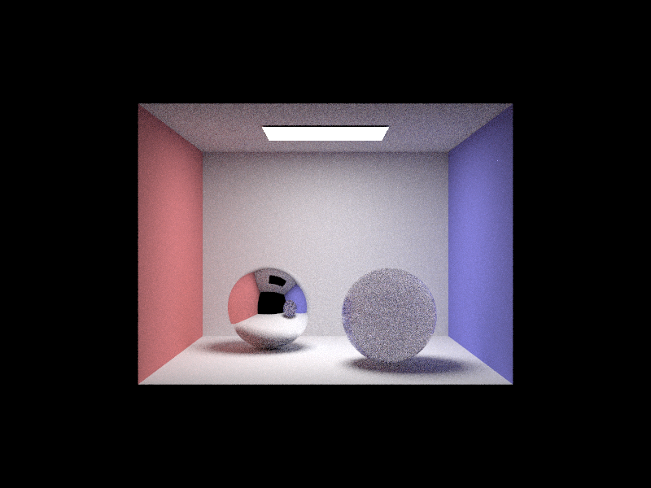
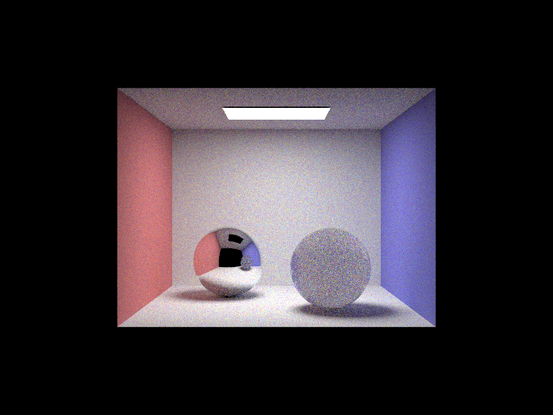
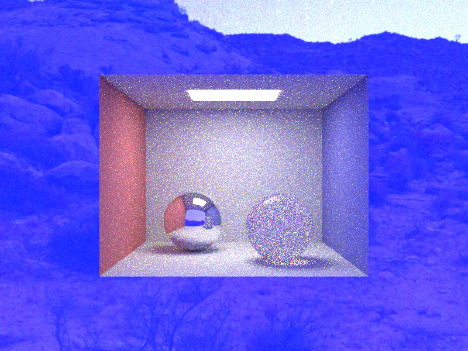

Week 1: SSS
Random-walk scattering makes the sphere cloudy and translucent under Cornell-box lighting.
CS184 Final Project Milestone
A path-traced translucent slime material built from subsurface scattering, spectral dispersion, and HDR environment lighting.
We extended the CS184 Project 3-2 path tracer into a renderer for translucent slime-like materials. Week 1 focused on finishing the base path tracer features we needed and adding a homogeneous random-walk subsurface scattering medium. Week 2 added hero-wavelength spectral sampling, wavelength-dependent dielectric refraction, EXR environment map lighting, and multiple importance sampling across direct light, BSDF, and environment samples.
The current validation scene is a Cornell-box setup with a chrome sphere and a translucent slime sphere. We can render the same scene in three modes: Week 1 SSS only, Week 2 spectral dispersion without HDRI, and the full Week 2 mode with HDR environment lighting.

Random-walk scattering makes the sphere cloudy and translucent under Cornell-box lighting.

Hero-wavelength sampling enables wavelength-dependent refraction and subtle dispersion.

Environment lighting and MIS make reflections and refractions richer, but also increase variance.
We are on track for the core renderer milestones. The Week 1 SSS medium
is integrated into glass materials through scene tags such as
sigma_a, sigma_s, and phase_g.
The Week 2 renderer supports spectral mode through -S and
HDRI loading through -e path/to/map.exr.
The main issue is visual quality rather than feature completeness. The current sphere is technically translucent, but it still reads more like a milky glass ball than a final slime asset. The full Week 2 image is also noisy because spectral sampling, volume scattering, refraction, and HDRI lighting all add variance.
Week 1 base path tracer integration, refractive glass, and homogeneous SSS validation renders.
Week 2 spectral mode, Cauchy/Sellmeier dispersion, EXR environment lighting, and MIS support.
Create an open environment scene: slime on a table or ground surface surrounded by a sunny HDRI.
Tune slime color and scattering, render the ablation grid, and produce final high-sample images.